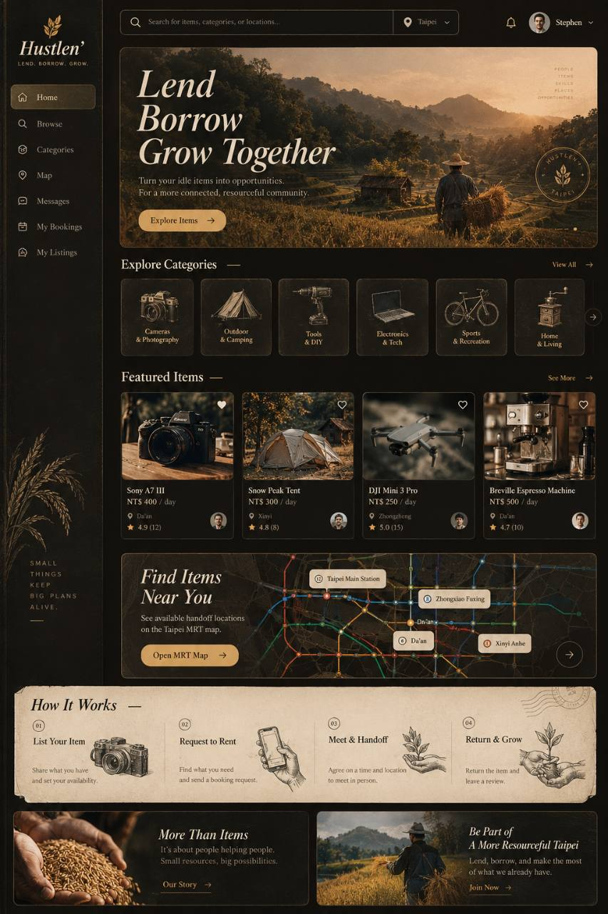
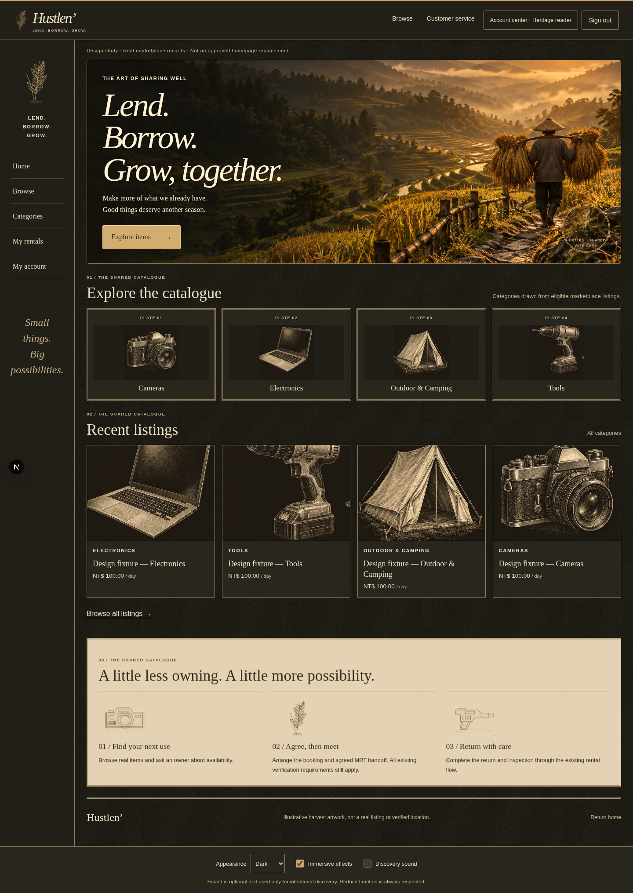
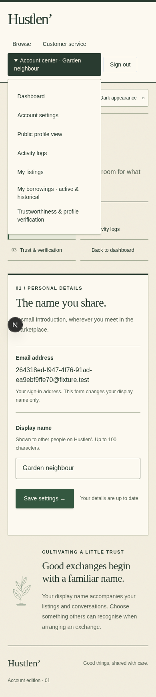
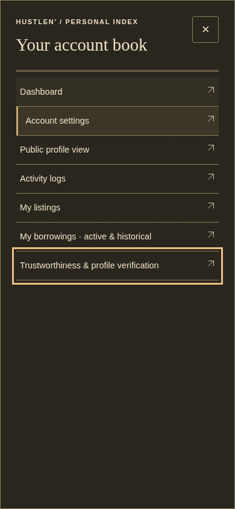
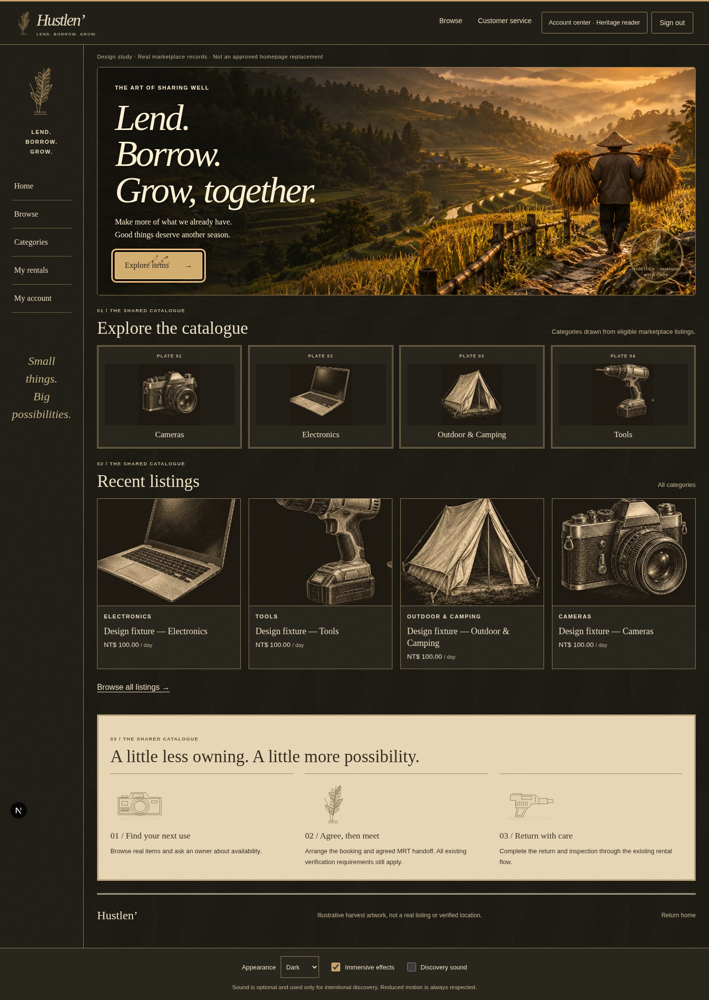
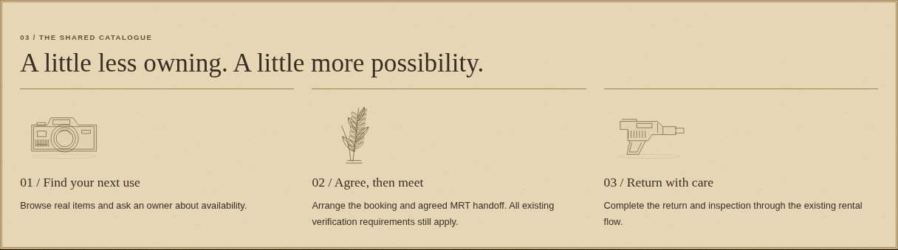

Hustlen’ / Agricultural Luxury R1
Independent visual review. Not product-owner approved. Stage 9 candidate only.
Full fidelity checklist · Asset provenance
The reference and the focused marketplace proof
Owner-supplied aesthetic reference. Its features are not implementation claims. Full resolution
Actual read-only catalogue route; labelled synthetic owned listing fixtures. Full resolution
Account / dark
Account / light
Mobile navigation
Previous overlapping dropdown. Full resolution
Actual viewport-sized native modal sheet, with focus and dismissal checks. Full resolution
Touch and small screens
Interaction and material detail
Real keyboard-triggered animation paused at 110ms for a representative frame; cleanup timer unchanged. Full resolution
Direct native-scale screenshot of textured parchment. Full resolution
Control states
Optional original sound study
Original 110ms filtered-noise approximation. Playback is manual. Runtime Web Audio is stochastic and independently verified in browser tests.
No sound copied from Minecraft or another game. Subjective quality remains for owner review.